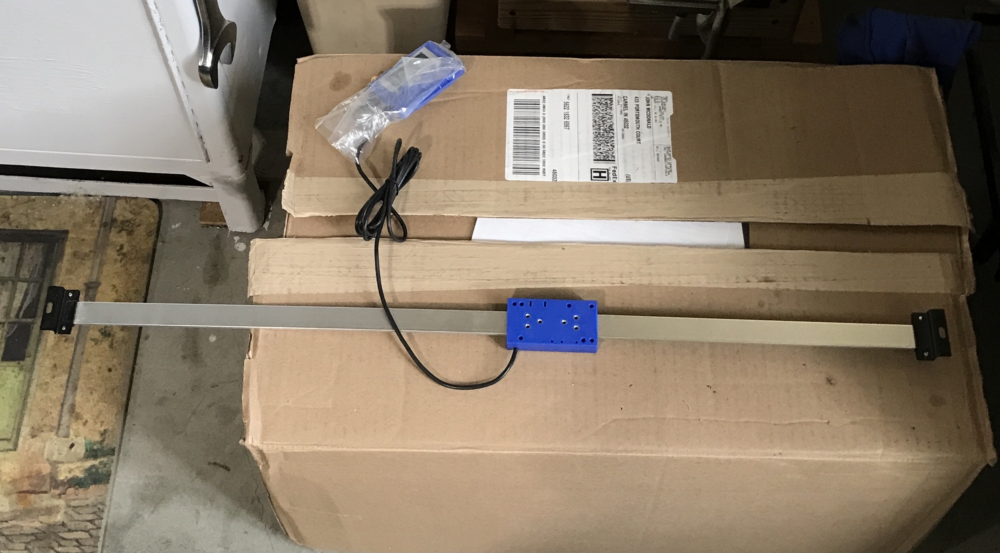

It has been at least a year since I purchased a digital readout for the South Bend cross slide. When travel distance along the bed is important, I have used the stop with a dial indicator installed. If I can get this DRO installed, I will always know how much the tool has moved. The DRO was purchased from Shars. It is about two feet long and the measuring bit sits out from the lathe when installed by about 1/4". It comes set up to mount to the lathe with screws. The first three photos below show the DRO, an end bracket, and the sliding detector.



My plan is to mount the rail with two strong magnets as I don't want to drill into the lathe. The measuring device will be mounted to the taper attachment. In order to do this a horizontal plate will be screwed to the bottom of the taper attachment. (See the last photo above.) The two screws holding the gib in place are about 8" apart. They are approximately 1 1/2" out from the lathe bed. The horizontal plate will hold a vertical plate that will mount to the back of the measuring device. It has to fit in the 1/4" gap between the measuring device and the lathe.
If the magnets do not stick well to the DRO mounting brackets, the brackets will be screwed to small steel plates. The pull strength of these magnets between two steel plates is 45 lbs. It is 30 lbs between the magnet and a steel plate.
A piece of 3/16" X 2" X 12" aluminum was found in the box. It was marked at 9" and cut with the horizontal bandsaw. I decided to go with the steel plates for the mounting brackets. Some 1/4" X 1 1/4" bar stock was located. Two 1 9/16" lengths were marked out and cut with the bandsaw. The ends and edges were cleaned up with a file. These and the cross slide mount are pictured below.


I am not sure exactly where to put the holes in the cross slide mount. The distance from screw holes to the detector mounting plate will be covered by making slots instead of holes. To get the distance between them right the gib mounting plate was removed. The plate along with a 5/16" transfer punch was used to transfer the holes to the aluminum plate about 3/8" in from each end. A compass was used to make arcs and the arcs were connected with a straightedge and scribe.

The aluminum plate was mounted on vee blocks and the holes were drilled with a center drill and then a 5/16" drill. This is seen in the first picture. This clamping arrangement was not sufficient for milling so the plate was moved to the vise on parallels. The slots were cut in four passes with a 5/16" end mill. The slots and edges were deburred. The photo shows the almost completed plate.

The magnets arrived this morning. They are 3/4" in diameter and 3/8" thick. They are strong. It is extremely difficult to get one off of the stack pictured below.

The part of this that will attach to the sliding detector will be made from 1/16" thick aluminum plate. The sliding detector pictured above is 1 9/16" X 2 15/16". The four outer holes span 1 9/16" the long way and 11/32" the short way. The holes are 0.609" from the long edge and 0.688" from the short edge. The provided screws for attaching the sliding detector measured 0.116" in diameter. This is a bit big for a 4-40 and small for a 3.5 X .6. I could not get a 4-40 nut on the screw and upon close inspection the threads do not align with 4-40 screw threads: probably metric. I will use a 9/64" drill for clearance.
Four holes were laid out and drilled before I noticed my mistake. Should have at least drawn the part before cutting or drafted it in Fusion 360. The part needs two holes along one long edge to attach it to the edge of the cross slide mount. Aligning the parts revealed that one pair of holes can still be used. I doubt four are needed. The alignment also indicates some relief needs to be cut in the mount for the cord protruding from the top of the sliding detector.

Two holes were drilled through the detector plate. They were spaced 1/4" in from the short side and 3/32" in from the long side. They were drilled with a 0.140" drill. These holes were used to mark the edge of the aluminum mounting plate. The holes were located about 3.25" in from each end. These holes were drilled and tapped for 4-40 screws. The screws were cut off and a washer (#6) was used. The assembled plates are shown below.

The mounting brackets on the ends of the DRO only have one hole or slot for a screw. This will be used to attach the 1/4" thick steel plates for magnetic attachment. The size of the holes in the brackets is clearance for a #8 screw. I have some 1/2" #10 screws that also fit through these clearance holes. The plates were drilled on center and tapped for a 10-32 screw. A stack of four washers was used instead of cutting the screws shorter. The attached magnet plates are shown below.


After lunch it was time to put it all together. Everything was moved to the garage and the area behind the lathe was cleared out. With the mounting bracket attached to the DRO, the DRO was held in position. The first difficulty appeared. The large aluminum mounting plate was too wide. Part of the taper attachment drops below its level and kept the plate from fitting. It was about 1/4" too wide. I marked a line 1/2" from one long side and used a hacksaw to cut the 9" length. It had to be cut from both sides. The cut was very straight and they met perfectly in the middle.

The cut was cleaned up with a file and the edges slightly chamfered. The next problem was the lathe's screws did not fit in the slots. They fit in the drilled holes, but not the slot. This was fixed by filing the slots. The first photo shows the plate at this stage. The second photo shows a 1/4" overlap of the mounting plate with the taper attachment after screwing it in place with the DRO attached. This left the feet about 1/4" from the lathe bed side. The mount was moved away from the lathe a further 1/8" to accomodate the 3/8" magnets.


The magnets were inserted between the DRO bracket plates and the lathe bed. Multiple measurements followed by adjustments were made, so the DRO was parallel with the lathe bed in two directions. The distance from the bottom of the ways to the top of the DRO is slightly less than 2". The distance from the outside of the DRO bar to the lathe behind it is 1 3/16". Measurement showed these numbers to be consistent at the ends and adjacent to the mounting plate. It was time to try it out... Hmmm, it is not aligned somehow. Moving the carriage with the hand wheel moves the entire DRO! I decided to stop and give it some thought. Below are two shots of the mounted DRO.


A set of calipers was used to measure the alignment of the DRO. It was off by more than I thought. The distance between the DRO and the lathe bed was within 0.020". It was the vertical distance that was significantly off. When this was adjusted by shifting the ends of the DRO, the error was also dropped below 0.020". Both sets of measurements were difficult to take. The DRO still moved when the carriage was moved.
The screws holding the mounting plate to the gib were loosened and then retightened just finger tight. This allowed play in the mounting plate, i.e. it could slip along the screws slightly at both ends. The DRO no longer visibly moved with the carriage. The DRO was turned on and set to zero at the stop. Movement away from the stop and returning to the stop did not provide the accuracy needed. Returning to the stop showed a reading from -0.020 to +0.020". I was unable to feather the tightness to remove the play and not clamp down on the DRO.
One other possibility came to mind while laying in bed. The casting for the gib might not be uniform. It was measured this morning. It varies from 0.390" at one end to 0.425" at the other. Might this be the culprit for the dragging? I will shim the thinner end and see if that eliminates the problem.
The thinner end was shimmed with a 1/32" thick strip of brass. There was still movement, though usually less than 0.01". The magnets will be replaced by screws! Two new 3/8" spacers were needed to replace the magnets. Two scraps of 2" round aluminum were found. One had a large through hole. The other was drilled up to 1/2" on the South Bend. It was faced to 0.375" and all edges chamfered. The other aluminum spacer only needed to be faced to 0.375".

The magnet and spacer were removed from the tailstock end. The opening in the DRO bracket was marked on the lathe. A hole was drilled and tapped 10-24. This hole went into a connector between the two sides of the lathe bed. It was drilled about 5/8" deep before tapping. The hole in the steel spacer was opened to 7/32". It and the aluminum spacer were installed between the lathe and the bracket with a 1 1/4" 10-24 SHCS.

Drilling a hole for the headstock bracket was another kettle of fish. It was situated just between the motor and the lathe. There was not enough room to fit the cordless drill. Two shorter corded drills were also tried, but neither came close. I located the never-before-used right angle drill adapter. One end was mounted to a chuck, while the other ended in a socket threaded 3/8-24. An adapter was needed. A 3" long scrap of 1/2" aluminum was chucked in the Sherline lathe. The end was faced and center drilled. The diameter was reduced to 0.375" for a length of 2" using a tailstock center. The shaft was held in a vise and the reduced end was threaded with a 3/8-24 die. The first time the die went on crooked and gave really wonky threads. These threads were cut off and the shaft was rethreaded correctly. The device has some wiggle to it, but it was usable.

The DRO was attached at the tailstock end and the free headstock end was marked for drilling. The right angle adapter with drill bit installed was used to drill the hole. It went reasonably well when the correct speed was found. The speed was almost too fast for the wiggling adapter. This hole went through the side of the lathe bed. It was tapped 10-24. The two spacers were held behind the bracket while a screw was installed. A ruler was used to make sure both ends were sitting 1 3/16" below the bottom edge of the ways. This distance matched the same measurement near the cross slide attachment. With everything attached the carriage moved smoothly.
After tightening the stop so it would not move. the carriage was moved to the stop. The DRO was turned on and zeroed. The carriage was moved away and back to the stop repeatedly. There was never more than 0.001" error. Usually the carriage returned to 0.000!


The last task was mounting the readout. It came with a blue plastic bracket. This bracket was screwed to the corner of the bulletin board propped behind the lathe. The readout was mounted. It is shown in the photo below.